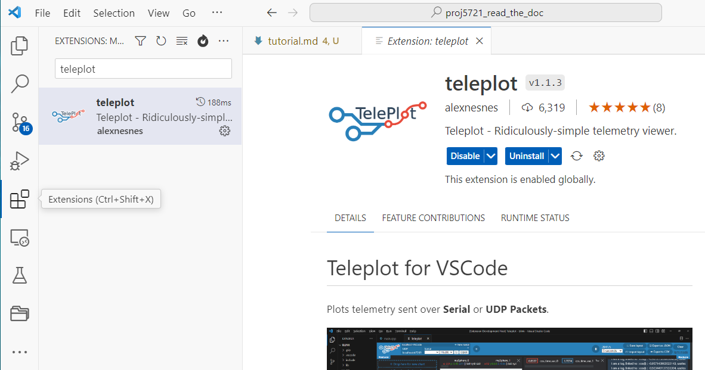
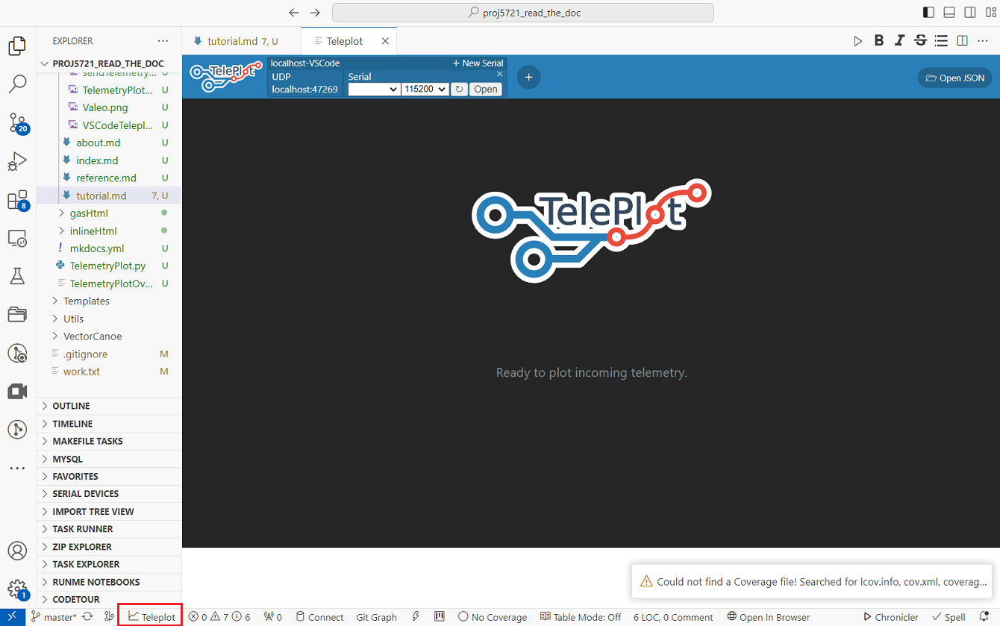
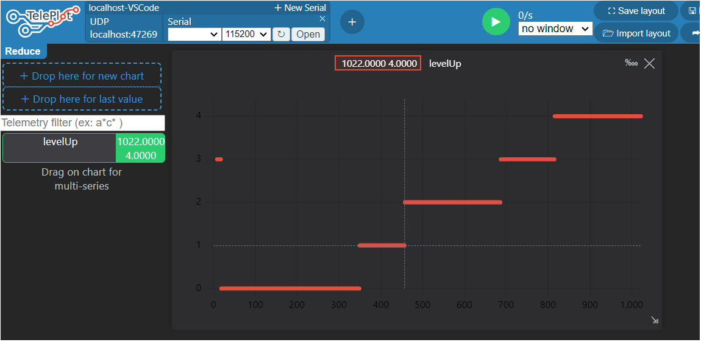

Tutorial
You'll learn how to get started using the TelemetryPlot Python module
The TelemetryPlot.py Python module provides a set of services to plot telemetry data.
Telemetry data are sent over UDP Packets in a format compatible with the Teleplot for VSCode extension.

Build of material
| File | Description |
|---|---|
| TelemetryPlot.py | Set of services to plot telemetry |
Requirements
- Python V3.9+ (Software Validation Python distribution)
- socket Python package
The Windows Software Validation (standard) Python distribution already satisfy those dependencies.
- VSCode editor
- Teleplot for VSCode extension
Python module installation
The module is packaged in the TelemetryPlot.zip archive.
The module can be installed by copy (unzip) in your working directory.
Teleplot for VSCode extension installation
The Teleplot VSCode extension can be installed via the extension manager.

Teleplot for VSCode extension activation
To activate the extension, click on the VSCode Teleplot icon.

Importing the module
First copy the module in your Python script working directory.
import sys
sys.path.append(".")
from TelemetryPlot import *
Services usage
Three plot functions are provided by the module.
-
sendTelemetryText(chanelName: str, text: str) Send the given text message to the given Telemetry chanel name.
-
sendTelemetryTimeStampedValue(chanelName: str, value: Union[int, float]) Send the given value to the given Telemetry chanel name.
-
sendTelemetryXY(chanelName: str, xArray: List[Union[int, float]], yArray: List[Union[int, float]]) Send the given x and y values to the given Telemetry chanel name.
Before calling any off those functions, the initializeTelemetry() function must be called once.
# Example of Trace32 VT
VT_INPUTS = list(range(1023)) # adc values
VT_OUTPUTS = [0] * len(VT_INPUTS) # Level values
# Loop
for i in range(len(VT_INPUTS)):
myT32.writeSingleVariable("STUB_u16AdcSample", VT_INPUTS[i])
time.sleep(0.1)
VT_OUTPUTS[i] = myT32.readSingleVariable("DBA_strStates.au8BatteryLevel[0]")
# TelemetryXY
initializeTelemetry()
sendTelemetryXY("levelUp", VT_INPUTS, VT_OUTPUTS)
VSCode Teleplot display result:

Code documentation
☛ Refer to the reference chapter for the detailed technical module documentation.